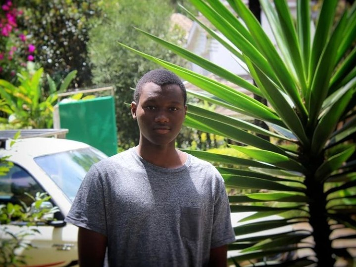

Hello Good people
My Name is Martin Mylles I have always had a passion on technology especially software and im really enjoying moringa school as a whole.
I am a passionate person on also sports i have played rugby football and volleyball out of curiosity but in real sense im an outdoor person.
That said it doesnt really mean i wouldnt stay indoos to code or learn something online it just shows that i like to balance between them both.


I have made this site using:
- Java
- Css